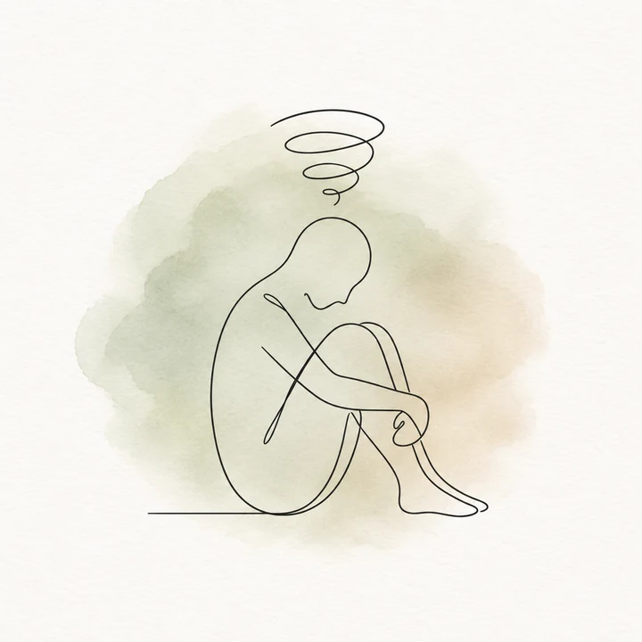
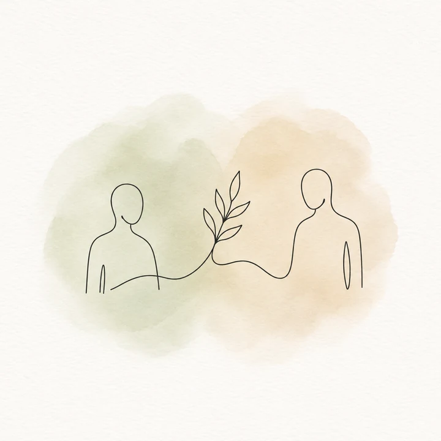
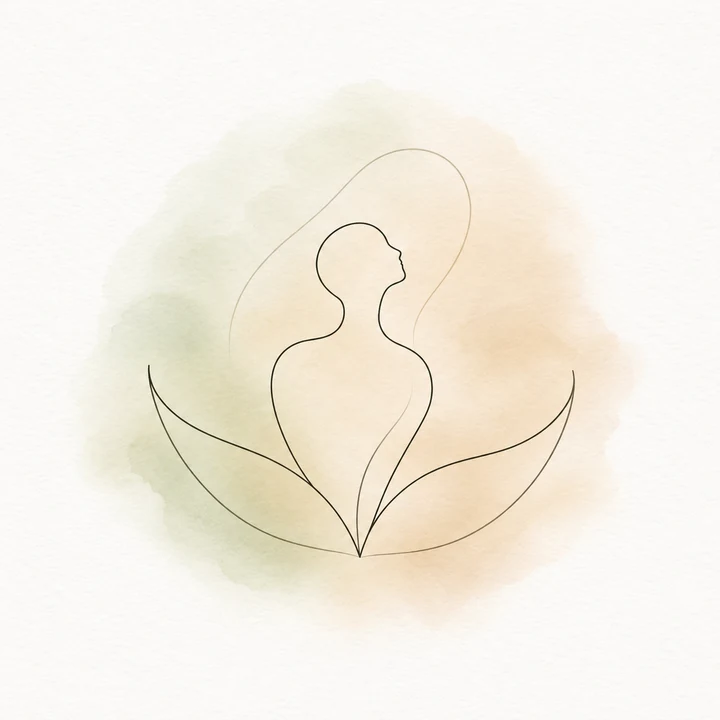

Olduğunuz hâlinizle karşılanmak
Yaşadıklarınızı belirli bir sırayla ya da eksiksiz anlatmanız gerekmez. Kendinizi ifade edebildiğiniz yerden başlayabilir; henüz paylaşmaya hazır olmadığınız konular için zamana ihtiyaç duyabilirsiniz.
Psikolog Emel Gönül · İstanbul merkezli online görüşmeler
Zihninizi meşgul eden düşünceler, zorlayıcı duygular ya da tekrarlayan ilişkisel güçlükler… Yaşadıklarınızı anlamak ve ihtiyaçlarınıza uygun adımlar belirlemek için birlikte çalışabiliriz.
Nereden başlayacağınızı bilmeniz gerekmiyor.
Çalışma yaklaşımım01Tanışalım
İstanbul Üniversitesi’nde ilk adımlarını attığım psikoloji yolculuğunda, insanın derin ve biricik iç dünyasını anlamaya ve ona şefkatle eşlik etmeye devam ediyorum. Çalışmalarımın merkezinde, insana ve yaşama geniş bir pencereden bakan bağlamsal bakış açısı yer alıyor. Beck Enstitüsü bünyesinde aldığım Bilişsel Davranışçı Terapi eğitimi ile ACT Türkiye bünyesinde aldığım Kabul ve Adanmışlık Terapisi eğitimleri, bu yolda bana rehberlik eden önemli kaynaklar arasında yer alıyor.
Temel olarak iki alanda çalışmalarımı yürütüyorum. Bunlardan ilki, sınavlara hazırlanan öğrenciler ve genç yetişkin bireyler. Sınava hazırlık süreci yalnızca ders çalışmaktan ya da akademik bir tempodan ibaret değildir. Gelecek kaygısını, performans baskısını ve belirsizlikleri de beraberinde getirebilen, psikolojik olarak zorlayıcı bir dönemdir. Artan stres, kişinin kendi potansiyelini ortaya koymasını güçleştirebilir. Böyle zamanlarda zihinsel ve duygusal dengeyi gözetmek, hissedilen yükü paylaşabilmek adına destek almak kıymetli bir ihtiyaç hâline gelebilir. Sınav döneminin getirdiği kaygıyı şefkatle karşılamak, kişinin kendi imkânlarını daha sakin bir yerden değerlendirmesine eşlik etmek ve süreci daha sürdürülebilir kılmak için öğrenciler ve genç yetişkinlerle birlikte yürüyoruz.
Bir diğer çalışma alanım ise yaşamın getirdiği sorumluluklar ya da beklenmedik dönüm noktaları karşısında dengesini ve iç huzurunu bulmaya ihtiyaç duyan yetişkinler. Hayatın getirdiği zorluklarla baş etmekte, yaşamda kendisi için anlamlı olanı bulmakta ya da bu doğrultuda adım atmakta zorlanılan dönemleri birlikte değerlendiriyoruz. Bağlamsal bakış açısının sunduğu esneklikle görüşmelerimizi ihtiyaçlarınıza göre şekillendiriyor; süreci sizin hazır oluşunuza ve kendi ritminize özen göstererek birlikte örüyoruz.
Kendi hazır oluşunuza, adımlarınıza ve ruhunuzun sesine şefkatle alan açan, yargılardan uzak bir ortamda sizinle buluşmayı önemsiyorum. Yaşadıklarınızı ve ihtiyaçlarınızı birlikte değerlendirebileceğimiz, farkındalıklarınıza özenle eşlik edebileceğimiz bu alana hoş geldiniz.
İyi ki geldiniz…
Birlikte nasıl ilerleyebiliriz?Görüşmelerimize dair
Her insanın yaşam öyküsü, ihtiyaçları ve hazır oluşu kendine özgüdür. Görüşmelerimizde yaşadıklarınıza bu özenle yaklaşır; size nasıl eşlik edebileceğimizi birlikte değerlendiririz.
Yaşadıklarınızı belirli bir sırayla ya da eksiksiz anlatmanız gerekmez. Kendinizi ifade edebildiğiniz yerden başlayabilir; henüz paylaşmaya hazır olmadığınız konular için zamana ihtiyaç duyabilirsiniz.
Duygularınızı, düşüncelerinizi ve yaşamınızdaki ilişkileri, içinde bulunduğunuz koşullarla birlikte ele alırız. Sizin için zorlayıcı olanları ve ihtiyaç duyduğunuz desteği birlikte anlamaya çalışırız.
Yaşamınızda nelerin önemli olduğunu ve hangi değişimlere ihtiyaç duyduğunuzu birlikte değerlendiririz. Süreci, hazır oluşunuzu ve geri bildirimlerinizi gözeterek şekillendiririz.
02Çalışma alanları
Bazen yaşadıklarımızı anlamlandırmak, bazen de taşıdığımız yükü paylaşmak için desteğe ihtiyaç duyabiliriz. Size eşlik edebilecek bir süreci birlikte değerlendirebiliriz.

Belirsizliklerin, zihninizi meşgul eden düşüncelerin ve günlük yaşamın yükünün sizde nasıl bir karşılık bulduğunu birlikte değerlendirebiliriz.
01Hazırlık sürecinde hissettiğiniz baskıyı, beklentileri ve belirsizlikleri birlikte ele alabilir; ihtiyaçlarınıza ve kendi ritminize yer açabiliriz.
02
Kendinizle ve başkalarıyla kurduğunuz ilişkilerde hissettiklerinize, ihtiyaçlarınıza ve sınırlarınıza birlikte özenle bakabiliriz.
03
Yeni başlangıçların, değişen sorumlulukların ve dönüm noktalarının sizde uyandırdıklarını birlikte değerlendirerek sizin için anlamlı olan yönlere bakabiliriz.
04Deneyimlerinizin bu başlıklardan biriyle tam olarak örtüşmesi gerekmez. İhtiyaç duyduğunuz desteği ve size nasıl eşlik edebileceğimi birlikte değerlendirebiliriz.
03Nasıl ilerliyoruz?
Sürecin nasıl ilerleyeceğine dair sorularınızın olması doğal. İhtiyaçlarınızı ve beklentilerinizi, hazır olduğunuz yerden başlayarak birlikte değerlendirebiliriz.
Görüşme biçimi, süre, ücret ve uygun saatlerle ilgili bilgi alabilirsiniz. İlk görüşme öncesinde aklınızdaki soruları ve sürece ilişkin ayrıntıları birlikte netleştirebiliriz.
Sizi buraya getiren deneyimlere, beklentilerinize ve ihtiyaçlarınıza birlikte bakarız. Görüşmelerin çerçevesini ve size nasıl eşlik edebileceğimi değerlendiririz.
Süreç boyunca sizin için önemli olanları, değişen ihtiyaçlarınızı ve deneyimlerinizi birlikte değerlendiririz. Hazır oluşunuza ve geri bildirimlerinize özen göstererek ilerleriz.
Her insanın hazır oluşu ve ilerleyişi kendine özgüdür.
04Merak ettikleriniz
İlk adımı değerlendirirken aklınızda sorular olabilir. Burada yer almayan sorularınızı da görüşme öncesinde paylaşabilirsiniz.
Yaşadıklarınıza bir isim koymanız ya da önceden hazırlık yapmanız gerekmez. Sizi destek aramaya yöneltenlerden başlayabilir, deneyimlerinizi birlikte anlamlandırabiliriz.
İnternet bağlantısı, kamera ve mikrofonu olan bir cihaz ile kendinizi rahatça ifade edebileceğiniz, mahremiyetinizi koruyabileceğiniz bir ortam hazırlamanız yardımcı olur. Bağlantı bilgileri görüşme öncesinde paylaşılır. Online görüşmenin ihtiyaçlarınıza uygunluğunu ayrıca değerlendiririz.
Süre ve ücret bilgisi için görüşme öncesinde iletişime geçebilirsiniz. Görüşme sıklığını ihtiyaçlarınız doğrultusunda birlikte değerlendiririz. Sürecin uzunluğu kişiye ve ihtiyaçlarına göre değişebilir.
Gizliliğin kapsamını, sınırlarını ve online görüşmelerde dikkat edeceğimiz noktaları ilk görüşmede birlikte ele alırız. Bu konudaki sorularınızı başlangıçta paylaşabilirsiniz.
Yaşadıklarınızın, ihtiyaçlarınızın ve sizin için önemli olanların üzerinde birlikte dururuz. Sürecin odağını karşılıklı değerlendirmelerimizle belirler; zaman içinde değişen ihtiyaçlarınıza da yer açarız.
Bütün yaşam öykünüzü tek seferde aktarmanız gerekmez. Hazır olduğunuz yerden başlayabilir, henüz paylaşmak istemediğiniz konular için zamana ihtiyaç duyduğunuzu belirtebilirsiniz.
Hazır hissettiğinizde
İhtiyaç duyduğunuz desteğe ve size nasıl eşlik edebileceğime birlikte bakabiliriz. Sürece ilişkin sorularınızı paylaşabilir, ilk adımı kendi ritminizde değerlendirebilirsiniz.